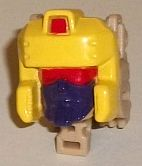

Allegiance
: Decepticon
Size
: Voyager
Difficulty of Transformation to Tank
:
Medium
Difficulty of Transformation to Jet
:
Medium
Color Scheme
: Tan, dark purple,
purplish off-white, and some moderately dark gray, red, yellow, and clear
plastic
Rating
: 8.0
(NOTE: Because this is a repaint, this is not a full-blown review. This mainly covers any changes made to the mold and the color scheme, and merely compares it to Titans Return Megatron w/ Doomshot. For a review on the mold itself, read the review of Titans Return Megatron w/ Doomshot here .)

Since Blitzwing is a
remold of Megatron, his Titan Master Hazard is a remold of Megatron's Titan
Master Doomshot. No mold changes have been made to the robot mode, and
unfortunately no paint apps have been added, either. Hazard's got a dark
purple body and upper legs, while his head, arms, and lower legs are an
unpainted tan. It's a decent basic color scheme, but
man
the head
in particular could've used some paint. All in all it just looks like a
tan-and-purple mini-Megs in this mode, unfortunately. In head mode, of
course, is where the mold change has been made to Hazard, to match G1 Blitzwing's
face, but with a bit of a modern update in terms of proportions. He's got
a fairly square face, which of course helps with the Titan Master arms
and legs behind it-- they don't get in the way of his silhouette. He's
also got a yellow "helmet" with a couple of minor divots and a small red
bit poking up out of the top of his forehead, while he has a dark red visor
across a fairly normal, dark purple face. His face has a pretty neutral
expression, so it's hard to discern much from it. The colors on his head
go together pretty nicely, however, and it is nice to see it's all painted.
The flipside of this, though, is that all the tan plastic on the back two-thirds
of the head kinda doesn't "fit" with the yellow on the front third.
Blitzwing's color scheme
isn't a surprise for those of you familiar with him. His robot mode and
jet mode are largely purple, while a lot of that purple is tucked away
for the tank mode, which is mostly a tan shade of plastic. These two colors
play off each other quite well and are a pretty "Decepticon-y" color scheme,
but a good amount of off-white plastic with just a TINGE of purple in it
has been added for many of the robot mode parts and connector pieces, and
it does quite well against Blitzwing's other main two colors-- complementing
and contrasting well against the purple, while providing another light
color for the tan to contrast against. There's a decent amount of somewhat
dark gray paint and plastic on him, but it's mostly left to the robot mode
arms/tank tread details. His tank and jet cockpits both have normal clear
plastic covering them, which doesn't really add or subtract anything from
the color scheme. There's also some tan paint on the robot knees; purplish
off-white on the lower chest; and bits of red and yellow on the upper chest.
His fists are also merely painted purple, with the inside holes showing
the tan plastic those pieces are actually cast in. Unfortunately, like
many larger Titans Returns figures, Blitzwing has some of those chintzy-looking
foil stickers, as well. The most obvious are the three-part foil stickers
on his wings, which (like pretty much all of these foil stickers) mimic
his G1 toy details-- he's got a simple red arrow going across the sticker,
with some yellow vent-like details near the front. Because these wings
fold up for the other two molds, though, the stickers can become bent a
bit at the edges, which is rather annoying. There's also two minor red
stickers for his chest (I'm not sure why these couldn't have been just
paint apps...)
As far as mold changes
go, beyond the aforementioned new facesculpt, Megatron's fusion cannon
has been traded in for Blitzwing's trademark purple edgy sword, which looks
pretty good, with some jagged edges that could really mess some Autobots
up. The chestpiece is also new, with some of the relatively simple details
on it that the G1 toy had, like triangles and squares, as well as some
simple armor panel lines near the bottom. The tank barrel piece is also
new, being a bit longer than Megatron's and more in line with what you'd
expect from a Blitzwing toy in tank mode.
Just as with
Octone
,
this later "remold" is definitely what this mold was intended to be from
the start, and Blitzwing's purple-and-tan color scheme looks considerably
better than Megatron's blah gray color scheme. The couple of mold changes
are largely positive, as well. That said, as a toy, I think the
"Thrilling
30th"
version of Blitzwing easily trumps this version, iffy shoulders
on the former aside. The alt modes aren't quite as strong here, nor are
the robot mode arms, and let's not forget that Animated homage face-switching
gimmick on the earlier version. If you want a strictly G1 Blitzwing, this
is closer, but unless that's your only request, I'd get the earlier version
over this toy.
Review by Beastbot